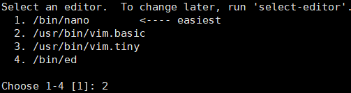
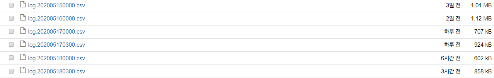

AWS EC2 (Linux Ubuntu)에서 crontab으로 Python 코드 자동화하기
- 이번 포스팅에서는 AWS의 가상환경 EC2에서 crontab을 사용해 파이썬 코드를 자동화시키는 방법에 대해 알아보고자 합니다.
Crontab?
크론탭이란 리눅스용 작업 스케줄러로, 특정 시각에 명령어를 반복 수행할 수 있도록 하는 프로그램입니다.
저는 크론탭을 이용해 파이썬 코드를 원하는 시간에 주기적으로 실행하기 위해 사용하였습니다.
Crontab in EC2 Linux Ubuntu
크론탭을 이용하는 방법은 간단합니다.
-
AWS EC2에 접속하면 터미널 창에
crontab -e를 칩니다. -
크론탭을 설정할 에디터를
vim으로 사용하기 위해2를 치고Enter를 누릅니다.
-
Shift+G로 마지막 줄로 이동하고i를 눌러 Insert mode로 진입해 명령어를 입력합니다. 입력 형식은 다음과 같습니다.1
2
3
4
5
6
7
8
9* * * * * 수행할 명령어
┬ ┬ ┬ ┬ ┬
│ │ │ │ │
│ │ │ │ │
│ │ │ │ └───────── 요일 (0 - 6) (0:일요일, 1:월요일, 2:화요일, …, 6:토요일)
│ │ │ └───────── 월 (1 - 12)
│ │ └───────── 일 (1 - 31)
│ └───────── 시 (0 - 23)
└───────── 분 (0 - 59) -
Esc를 눌러 Insert mode를 빠져나와서:wq + Enter로 저장하고vim을 종료합니다.
Crontab Format
그럼 크론탭 입력 형식에 대해 더 자세히 알아봅시다.
1 | * * * * * 수행할 명령어 |
저 *의 자리에 원하는 분, 시, 일, 월, 요일을 입력해주면 됩니다.
예를 들어, Python 버전 3.xx로 main.py를 주기적으로 시행한다 할 때 다음과 같이 vim에디터에 입력합니다.
-
매 1분마다
main.py를 수행1
* * * * * python3 main.py
-
매 15분, 45분마다
main.py를 수행1
15,45 * * * * python3 main.py
-
매 10분마다
main.py수행1
*/10 * * * * python3 main.py
-
매일 새벽 2시에
main.py수행1
0 2 * * * python3 main.py
-
평일 (월~금) 오후 8시에
main.py수행1
0 20 * * 1-5 python3 main.py
주의할 점은 분, 시, 일, 월, 요일마다 띄어쓰기를 해줘야 한다는 점입니다.
Python Argparse Module
주기적으로 실행할 main.py에는 어떻게 쓰면 될까요? 파이썬의 argparse 모듈을 이용하면 이 명령창 (command line)에서 인자를 입력받아 프로그램이 동작할 수 있게 할 수 있습니다.
예를 들어 사칙연산을 하는 파이썬 프로그램을 argparse모듈을 이용해 다음과 같이 작성했습니다.
1 | import argparse |
-
add_argument를 통해 필요한 인자들에 대한 정보를 적어줍니다.- 세 번째 줄에서
--x라는 플래그를 통해서 x의 인자를 받고,type은float형으로 지정합니다. - 다섯 번째 줄에서도 마찬가지로
--y라는 플래그를 통해y인자를 받고,type을float형으로 지정합니다.
이렇게
type을 지정해주는 이유는 지정해주지 않으면x와y를 기본으로str문자형으로 받기 때문입니다.--operation에는x와y로 할 연산자를 지정해줍니다.
- 세 번째 줄에서
-
parse_args를 통해 지정된 옵션으로부터 온 데이터를args에 저장해줍니다. 즉,args에x, y, operation라는 인자가 저장되도록 합니다. -
이제
calc함수를 통해 사칙연산을 계산해주고, 이를 출력해줍니다. -
if __name__ == "__main__"부분은main.py가 명령창을 통해 직접 실행할 때만parser()함수가 실행되도록 만들기 위함입니다.
백문이 불여일견: 브롤스타즈 게임 로그 저장하기
최근 BrawlStats Python API를 이용해 제 게임 데이터를 분석해보고자 crontab을 이용해 게임 로그를 저장하기 시작했습니다.
novdov님의 GitHub에서 소스 코드를 참고했습니다 (BrawlStats API에서 약간 달라진 함수들이 있어 수정했습니다).
브롤스타즈 게임 기록은 최근 25건까지만 저장되기 때문에 주기적으로 저장해주는 자동화 프로그램이 필요했습니다.
따라서 __main__.py를 매일 3시와 자정에 실행하도록 crontab에서 설정해 로그를 저장했습니다.
vim에디터에 다음과 같이 토큰이 있는 경로, output을 저장할 경로, 브롤스타즈 태그를 적어줍니다.
1 | 0 3 * * * python3 __main__.py --token_path token --output_dir /home/ubuntu --tag URC00YYV |
5월 15일부터 모은 게임 데이터는 이렇게 저장되었습니다. 중간에 다른 유저의 데이터도 저장하다보니 이렇게 저장되었습니다.

이어 제 게임 데이터를 분석해보는 포스팅을 할 예정입니다 😃